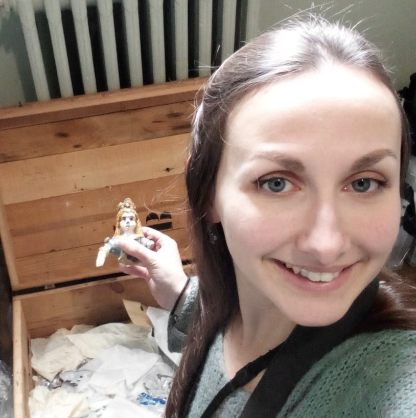

Who Carried Out the Project?
Data Collection - Data Analysis - Research

Madeleine Daste
PhD Student - Université Paris 1 Panthéon-Sorbonne; University of Bologna
With a background in art and archaeology from my Bachelor’s and first Master’s in History of Art, I specialized in cultural heritage preservation, particularly in conflict contexts. During my second Master’s in conservation-restoration, I developed a restoration protocol for ceramics damaged in war. My thesis examines bomb-induced damage on ceramics from the National Ceramic Museum in Sèvres and the MIC in Faenza, analyzing the effects of blast, shock, and fire on different materials. This research aims to improve restoration protocols, aiding professionals in efficiently sorting and restoring post-conflict debris.